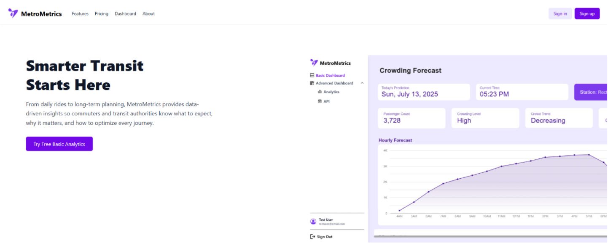
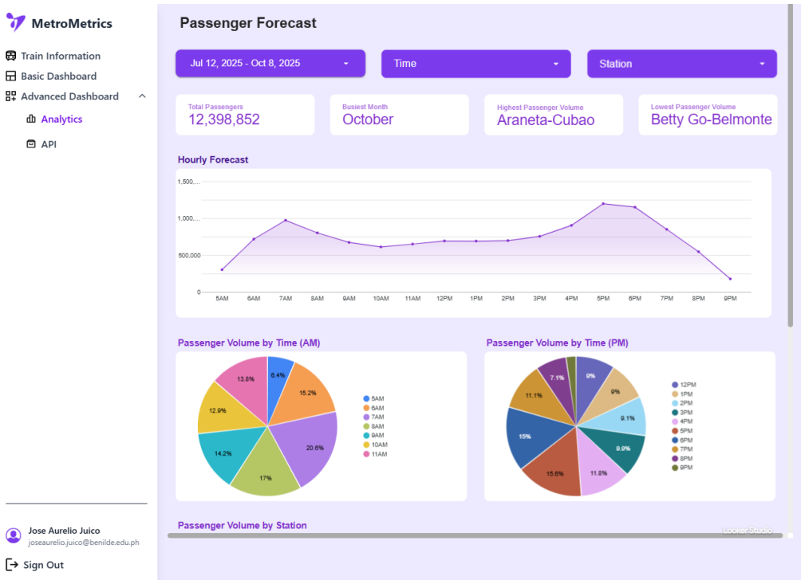
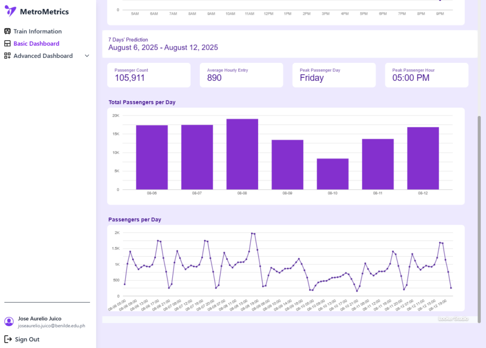
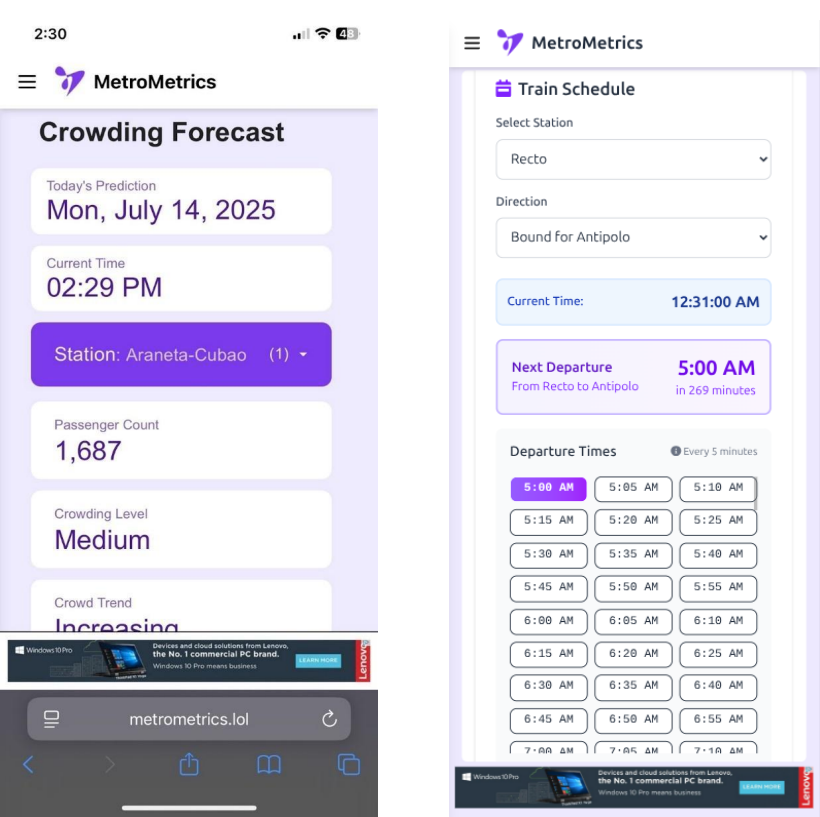

Academic Projects
MetroMetrics (Thesis Project)
A thesis project that uses predictive models to forecast crowd congestion at Metro Manila train stations. I built interactive dashboards in Google Looker to visualize insights and used Celery Beat for task automation.

Landing Page: Crowd Forecasting

Analytics: Passenger Volume Trends

Dashboard: 7-Day Prediction View

Mobile Responsivenes: Schedules & Alerts
EduScore
An academic project where I led a team to build an online faculty evaluation form for students. I also served as the Quality Assurance tester to ensure the prototype was bug-free before deployment.